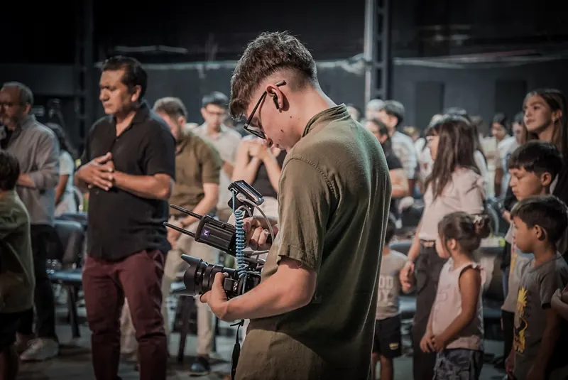
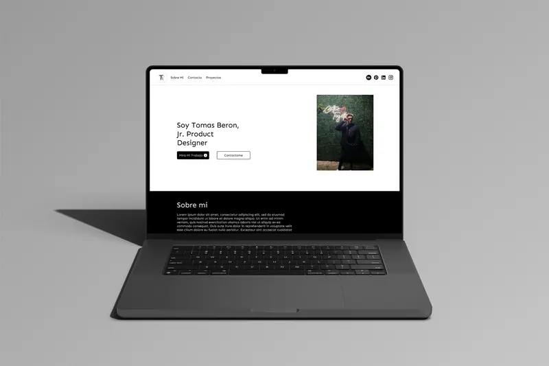
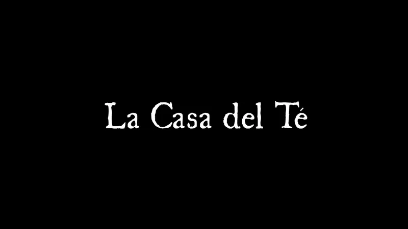

Selected work
Four areas that intersect: UX/UI design at the core, with audiovisual, web and graphic design as tools.
Product Design UX/UI
End-to-end websites: wireframes, mobile and desktop prototypes, design and icon systems, and QA with the development team.
View area ↗
Audiovisual production
Video editing, motion graphics and post-production: client testimonials, corporate content and short films.
View area ↗
Full Stack Development
Full stack training in JavaScript, React, Node.js and MongoDB. Understanding how things are built lets me deliver feasible designs from day one.
View area ↗
Graphic design
Visual identity, music covers and assets for Meta Ads, Google Search and social media.
View area ↗
All projects(12)
Each card links to the project details or the live site.

Deep Work
A productivity app that combines Deep Work, pomodoro and distraction blocking.
Compra Gamer redesign
Hardware e-commerce focused on accessibility, navigation and search.

Federico Villarino
A one-page portfolio for an independent audiovisual technician: his first online presence.

Kairo Creative Studio
Website for a fictional creative studio, designed in Figma and coded faithfully to the design.

DonRamón
A coffee shop e-commerce in React: catalog, persistent cart and checkout with Firebase.

E-commerce backend
REST API in Node.js, Express and MongoDB, with Handlebars views and real-time updates.

ASENWARE
Design and development of the website for this international fire alarm company's launch in Argentina.

Nimat Solutions
Full site redesign, navigation improvements and a custom ticketing system.

La Casa del Té
University short film: editing, camera and set design.

Costuras del Pasado
University short film: script, camera, focus pulling and color grading.
Tomix Visuals
Branding for my own brand: logo, color palette and typography.

Le Papillon
Advertising campaign for a hair salon: direction and coordination of the model and makeup artist.
Let's make something that stands out.
Have a website, a product or a campaign in mind? Tell me what you need and let's think it through together. I work remotely, in English or Spanish.
wikipediatomitob@gmail.com